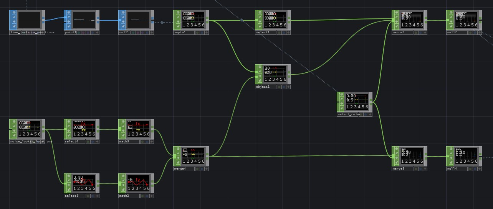

This examples looks to achieve exactly the same outcome as the previous example, only using the object CHOP instead for a simplified workflow. In this example you'll see the same results as in the previous, but here the rotation is calculated as a bearing measurement.
